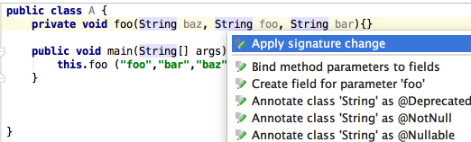

Mind that you can move method parameters in both declaration and invocation. To do that, use &shortcut:MoveElementLeft;/&shortcut:MoveElementRight;.
Moreover, it's possible to propagate such a move in a method declaration to the method invocations - just immediately after move press &shortcut:ShowIntentionActions;, and choose Apply signature change.
